Osobowe Ciężarowe Budowlane Dostawcze Motocykle Przyczepy Rolnicze Części Osobow
Sticky header
OK · bez drabinyCo widzimy
Header zawiera linki do kategorii, logowanie, koszyk11 elementów · 11 z werdyktem
Co jest na stronie i w jakiej kolejności widzi to klient. Strona ma 3082 px wysokości.
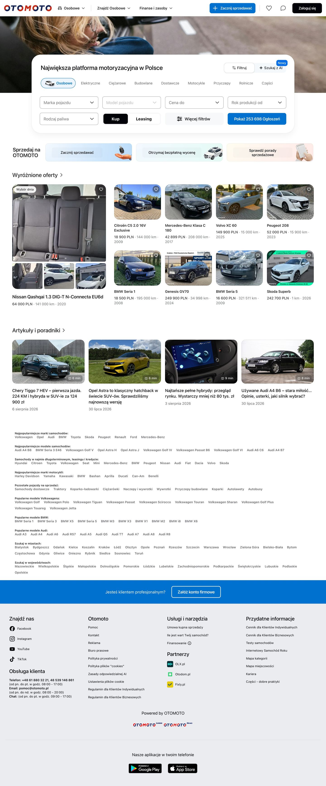
1 2 3 4 5 6 7 8 9 10 11| # | Etykieta (jak na stronie) | Element | Obserwacje | Etap i funkcja na ścieżce zakupowej | Od góry strony |
|---|---|---|---|---|---|
| 1 | Osobowe Ciężarowe Budowlane Dostawcze Motocykle Przyczepy Rolnicze Części Osobow | header | Header zawiera linki do kategorii, logowanie, koszyk | brak opisu | 0 px |
| 2 | Największa platforma motoryzacyjna w Polsce | największa_platforma_motoryzac | Blok treści (section/article), 4 dzieci | brak opisu | 214 px |
| 3 | Kup Leasing Więcej filtrów Pokaż 253 698 Ogłoszeń | section_358 | Blok treści (section/article), 1 dzieci | brak opisu | 358 px |
| 4 | Sprzedaj na OTOMOTO | sprzedaj_na_otomoto | Blok treści (section/article), 1 dzieci | brak opisu | 562 px |
| 5 | Wyróżnione oferty | wyróżnione_oferty | Blok treści (section/article), 2 dzieci | brak opisu | 673 px |
| 6 | Artykuły i poradniki | artykuły_i_poradniki | Blok treści (section/article), 1 dzieci | brak opisu | 1282 px |
| 7 | Jesteś klientem profesjonalnym? | jesteś_klientem_profesjonalnym | Blok treści (section/article), 2 dzieci | brak opisu | 2275 px |
| 8 | footer | Linki footer, social media, aplikacje | brak opisu | 2367 px | |
| 9 | Znajdź nas | znajdź_nas | Blok treści (section/article), 4 dzieci | brak opisu | 2415 px |
| 10 | Powered by OTOMOTO | section_2757 | Blok treści (section/article), 1 dzieci | brak opisu | 2757 px |
| 11 | Nasze aplikacje w twoim telefonie | section_2950 | Blok treści (section/article), 1 dzieci | brak opisu | 2950 px |
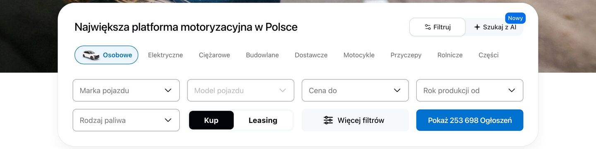
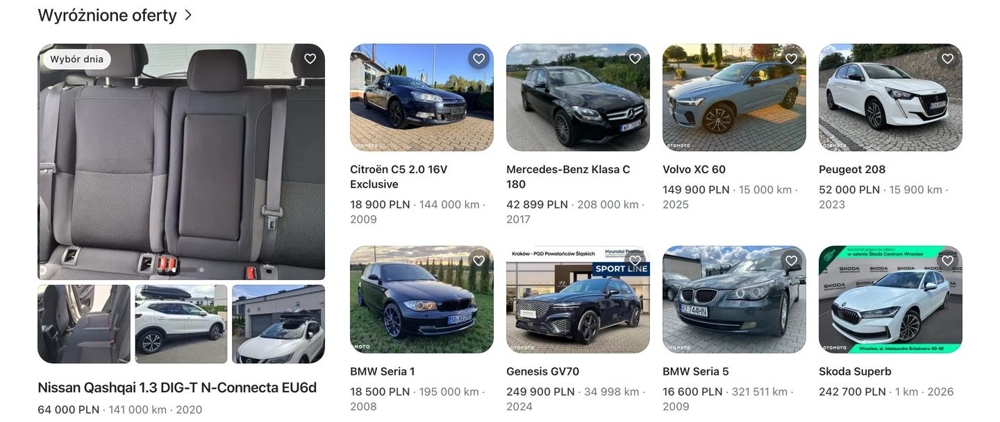
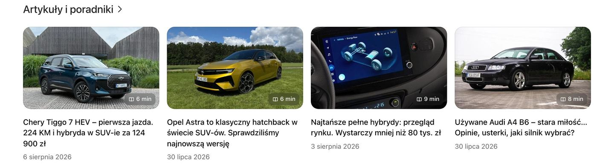
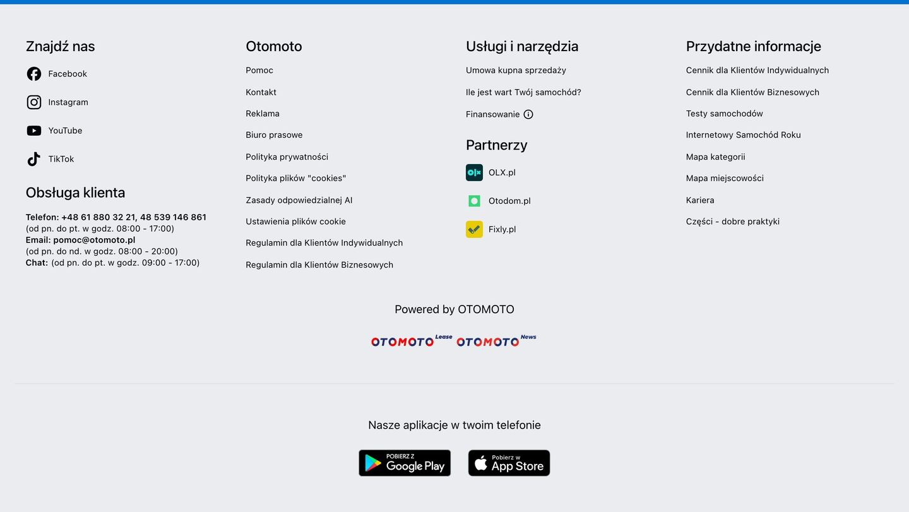
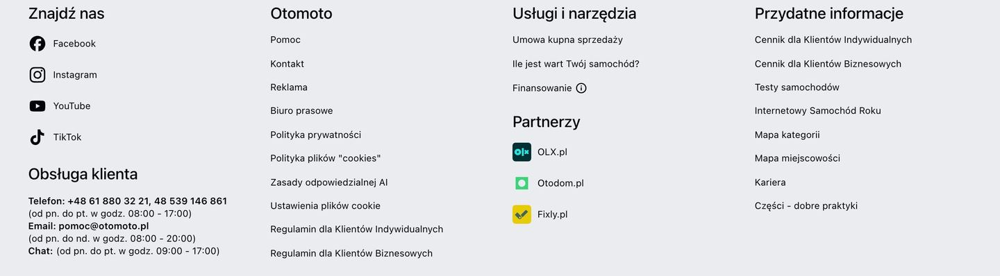
37 elementów · 37 z werdyktem
Co jest na stronie i w jakiej kolejności widzi to klient.
| # | Etykieta (jak na stronie) | Element | Obserwacje | Etap i funkcja na ścieżce zakupowej | Od góry strony |
|---|---|---|---|---|---|
| 1 | MG MG3 1.5 HEV+ Standard | mg_mg3_1.5_hev+_standard | Blok treści (section/article), 1 dzieci | brak opisu | 540 px |
| 2 | Mercedes-Benz CLA | mercedes-benz_cla | Blok treści (section/article), 1 dzieci | brak opisu | 872 px |
| 3 | MG MG3 1.5 HEV+ Excite | mg_mg3_1.5_hev+_excite | Blok treści (section/article), 1 dzieci | brak opisu | 1094 px |
| 4 | MG MG3 1.5 Standard | mg_mg3_1.5_standard | Blok treści (section/article), 1 dzieci | brak opisu | 1660 px |
| 5 | MG MG3 1.5 Excite | mg_mg3_1.5_excite | Blok treści (section/article), 1 dzieci | brak opisu | 1991 px |
| 6 | MG MG3 1.5 HEV+ Exclusive | mg_mg3_1.5_hev+_exclusive | Blok treści (section/article), 1 dzieci | brak opisu | 2323 px |
| 7 | Toyota Corolla 1.5 Active | toyota_corolla_1.5_active | Blok treści (section/article), 1 dzieci | brak opisu | 2655 px |
| 8 | Opel Zafira 1.8 Innovation | opel_zafira_1.8_innovation | Blok treści (section/article), 1 dzieci | brak opisu | 3015 px |
| 9 | Nissan Qashqai 1.5 e-POWER N-Connecta | nissan_qashqai_1.5_e-power_n-c | Blok treści (section/article), 1 dzieci | brak opisu | 3270 px |
| 10 | Maserati GranTurismo | maserati_granturismo | Blok treści (section/article), 1 dzieci | brak opisu | 3625 px |
| 11 | Kia Sportage 1.6 T-GDI M 2WD | kia_sportage_1.6_t-gdi_m_2wd | Blok treści (section/article), 1 dzieci | brak opisu | 3847 px |
| 12 | GAC AION UT | gac_aion_ut | Blok treści (section/article), 1 dzieci | brak opisu | 4069 px |
| 13 | Toyota Yaris | toyota_yaris | Blok treści (section/article), 1 dzieci | brak opisu | 4451 px |
| 14 | Mazda CX-3 | mazda_cx-3 | Blok treści (section/article), 1 dzieci | brak opisu | 4673 px |
| 15 | Renault Clio | renault_clio | Blok treści (section/article), 1 dzieci | brak opisu | 4895 px |
| 16 | BMW iX | bmw_ix | Blok treści (section/article), 1 dzieci | brak opisu | 5226 px |
| 17 | Mercedes-Benz GLA 250 4Matic 8G-DCT Progressive Advanced | mercedes-benz_gla_250_4matic_8 | Blok treści (section/article), 1 dzieci | brak opisu | 5448 px |
| 18 | MG ZS 1.5 Excite | mg_zs_1.5_excite | Blok treści (section/article), 1 dzieci | brak opisu | 5670 px |
| 19 | Toyota Proace Verso 2,0-l-D-4D L2 (8-Si.) Family | toyota_proace_verso_2,0-l-d-4d | Blok treści (section/article), 1 dzieci | brak opisu | 6384 px |
| 20 | Opel Astra | opel_astra | Blok treści (section/article), 1 dzieci | brak opisu | 6606 px |
| 21 | Dacia Sandero 1.2 16V Access | dacia_sandero_1.2_16v_access | Blok treści (section/article), 1 dzieci | brak opisu | 6828 px |
| 22 | Alfa Romeo Stelvio 2.0 Turbo B-Tech Edition Q4 | alfa_romeo_stelvio_2.0_turbo_b | Blok treści (section/article), 1 dzieci | brak opisu | 7162 px |
| 23 | Porsche Taycan 4 | porsche_taycan_4 | Blok treści (section/article), 1 dzieci | brak opisu | 7384 px |
| 24 | Volkswagen Arteon 2.0 TDI 4Motion R-Line DSG | volkswagen_arteon_2.0_tdi_4mot | Blok treści (section/article), 1 dzieci | brak opisu | 7765 px |
| 25 | Peugeot 408 | peugeot_408 | Blok treści (section/article), 1 dzieci | brak opisu | 8172 px |
| 26 | Ford EcoSport 1.0 EcoBoost ACTIVE | ford_ecosport_1.0_ecoboost_act | Blok treści (section/article), 1 dzieci | brak opisu | 8504 px |
| 27 | Seat Ibiza 1.0 Reference | seat_ibiza_1.0_reference | Blok treści (section/article), 1 dzieci | brak opisu | 8726 px |
| 28 | GAC AION V | gac_aion_v | Blok treści (section/article), 1 dzieci | brak opisu | 8948 px |
| 29 | Alfa Romeo Giulietta 2.0 JTDM Distinctive TCT | alfa_romeo_giulietta_2.0_jtdm_ | Blok treści (section/article), 1 dzieci | brak opisu | 9321 px |
| 30 | Hyundai i10 | hyundai_i10 | Blok treści (section/article), 1 dzieci | brak opisu | 9543 px |
| 31 | BMW Seria 5 520d xDrive Luxury Line | bmw_seria_5_520d_xdrive_luxury | Blok treści (section/article), 1 dzieci | brak opisu | 9765 px |
| 32 | BMW X7 xDrive40i | bmw_x7_xdrive40i | Blok treści (section/article), 1 dzieci | brak opisu | 9987 px |
| 33 | Dodge RAM | dodge_ram | Blok treści (section/article), 1 dzieci | brak opisu | 10319 px |
| 34 | Dostępne rodzaje paliwa | dostępne_rodzaje_paliwa | Blok treści (section/article), 4 dzieci | brak opisu | 10684 px |
| 35 | Znajdź nas | znajdź_nas | Blok treści (section/article), 4 dzieci | brak opisu | 11572 px |
| 36 | Powered by OTOMOTO | section_11914 | Blok treści (section/article), 1 dzieci | brak opisu | 11914 px |
| 37 | Nasze aplikacje w twoim telefonie | section_12107 | Blok treści (section/article), 1 dzieci | brak opisu | 12107 px |
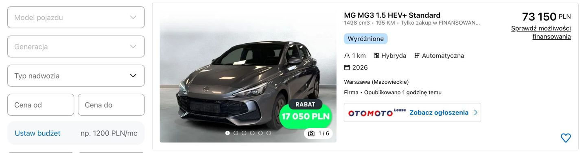
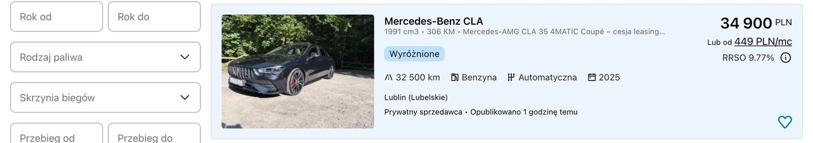
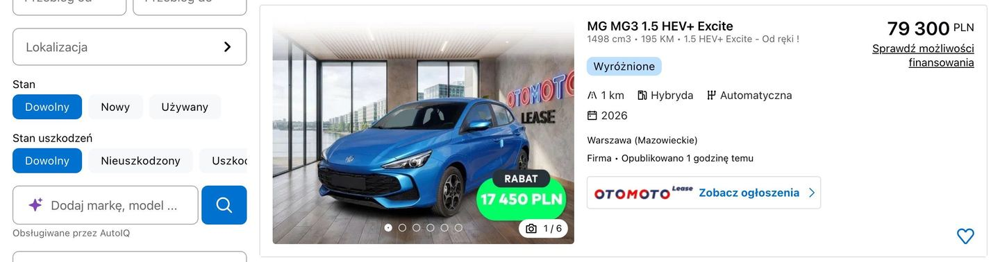
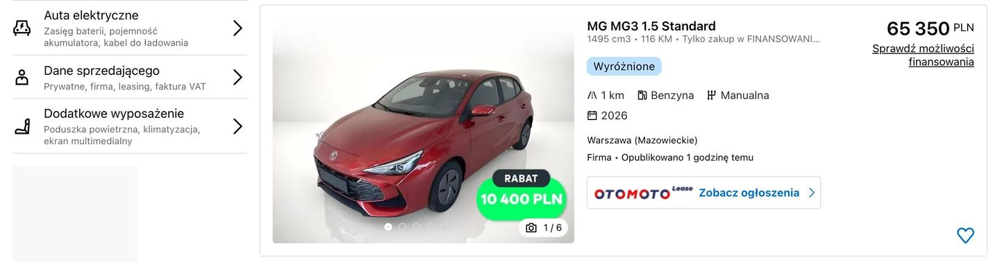
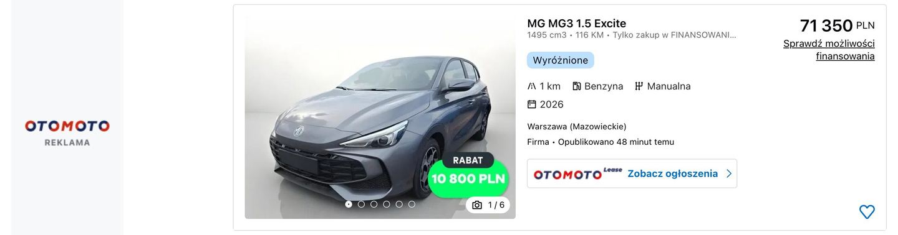
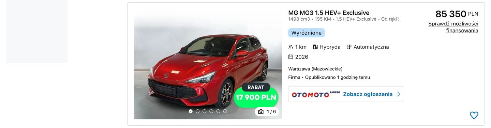
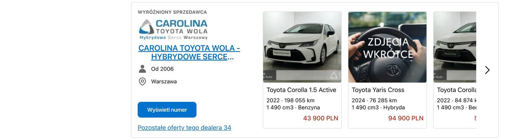
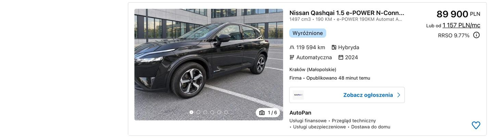
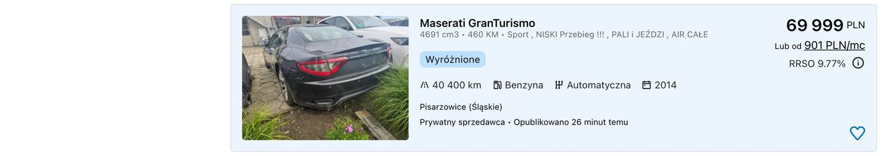
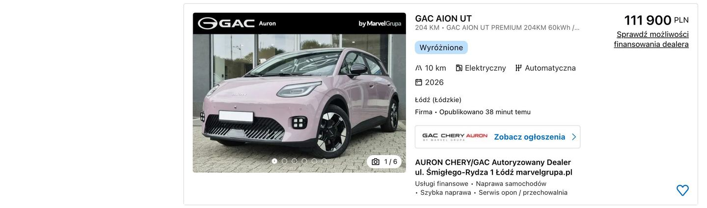
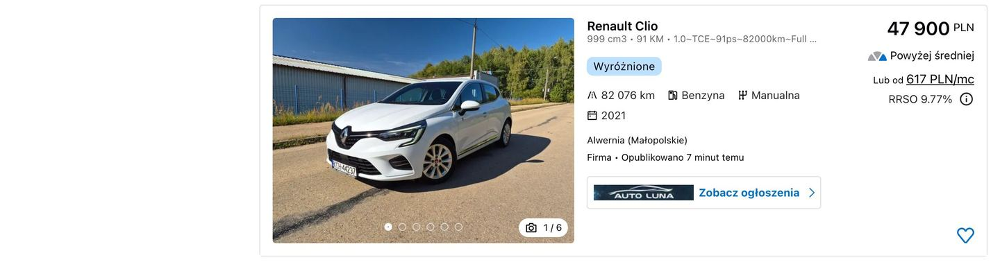
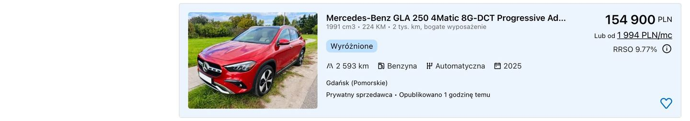
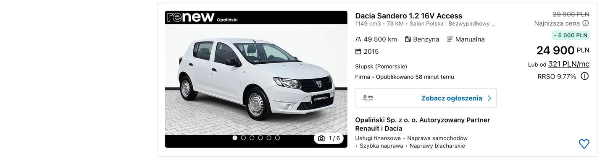
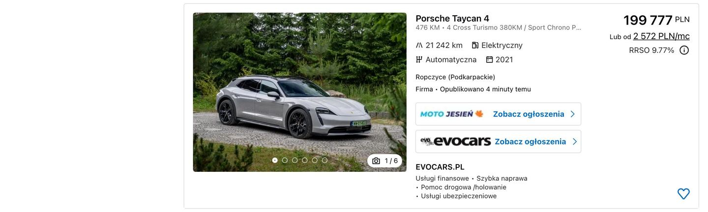
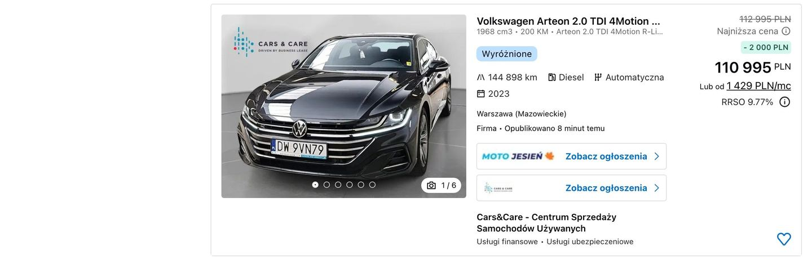
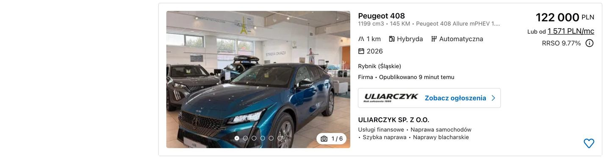
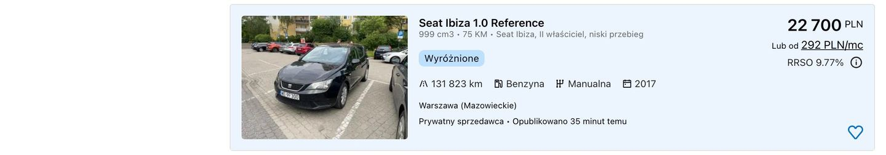
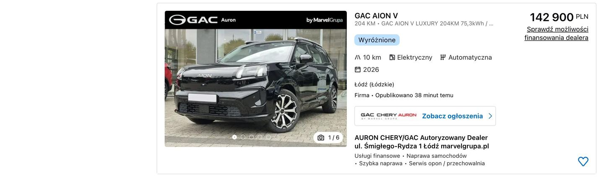
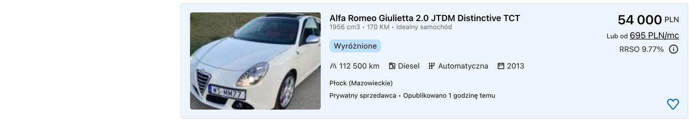
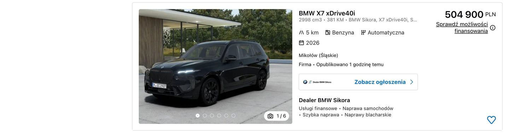
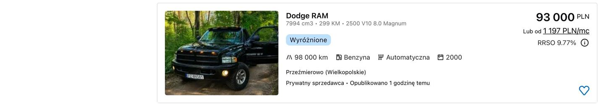
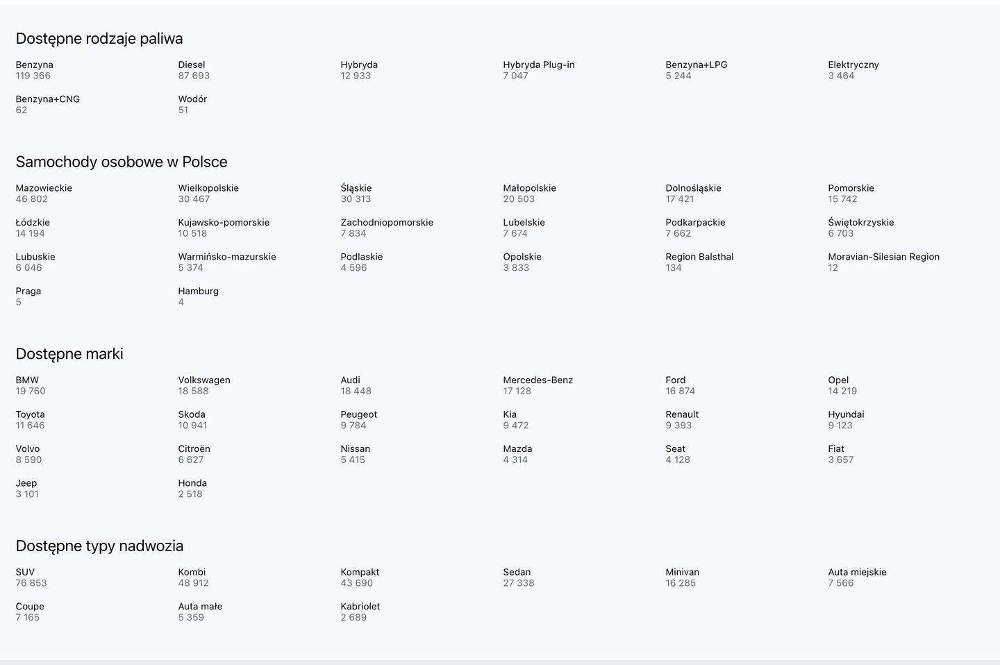
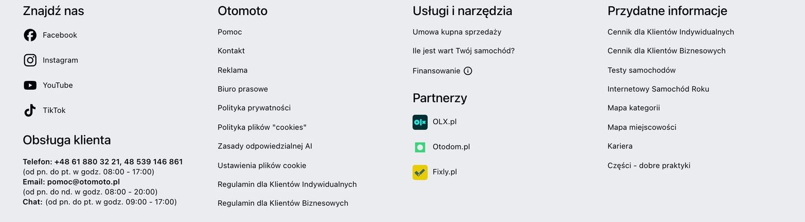
15 elementów · 15 z werdyktem
Co jest na stronie i w jakiej kolejności widzi to klient.
| # | Etykieta (jak na stronie) | Element | Obserwacje | Etap i funkcja na ścieżce zakupowej | Od góry strony |
|---|---|---|---|---|---|
| 1 | zdjęcie · MG MG3 | Zdjęcie główne | Pierwsza ocena wzrokowa — kupujący przesądza o zainteresowaniu ofertą zanim przeczyta specyfikację. | 0 px | |
| 2 | MG MG3 1.5 HEV+ Standard | Pełna nazwa wersji pojazdu | Precyzuje wersję i typ napędu — kupujący ocenia dopasowanie specyfikacji bez klikania. | 10 px | |
| 3 | 73 150 PLN | Cena aktualna | Kwota zestawiana z budżetem — decyduje o kontynuowaniu lub pominięciu oferty. | 10 px | |
| 4 | RABAT 17 050 PLN | Oszczędność | Wyróżnia ofertę jako wyprzedażową; kupujący rozpoznaje oszczędność bez czytania ceny regularnej. | 190 px | |
| 5 | Sprawdź możliwości finansowania | Platnosc odroczona / BNPL | Alternatywna perspektywa cenowa dla kupujących rozważających leasing lub raty — nie muszą wchodzić w ofertę, by sprawdzić ratę. | 38 px | |
| 6 | 1498 cm3 · 195 KM · Tylko zakup w FINANSOWANIU | Uzupełnia parametry silnika i sygnalizuje, że cena dotyczy wyłącznie finansowania — ważna informacja przed kliknięciem. | 38 px | ||
| 7 | Wyróżnione | Oznaczenie sponsorowania | Sygnalizuje, że to ogłoszenie płatne — część kupujących traktuje to jako wskazówkę co do wiarygodności źródła. | 65 px | |
| 8 | ●○○○○○ | Dots/strzałki wielu zdjęć | Informuje o dostępności pełnej galerii; kupujący ocenia, czy może dokładniej obejrzeć pojazd przed kliknięciem. | 268 px | |
| 9 | 1 km | Przebieg km na kaflu | Nowy przebieg usuwa ryzyko ukrytych usterek — decydujący sygnał dla kupujących nowych aut. | 110 px | |
| 10 | Hybryda | Rodzaj paliwa na kaflu | Filtr napędu — hybryda to kluczowa informacja dla kupujących optymalizujących koszty użytkowania. | 110 px | |
| 11 | Automatyczna | Preferencja skrzyni (auto vs manual) to często warunek graniczny przy wyborze auta. | 110 px | ||
| 12 | 2026 | Rok produkcji na kaflu | Rocznik pozwala oszacować wiek i aktualność modelu — 2026 to sygnał bieżącej generacji. | 140 px | |
| 13 | Warszawa (Mazowieckie) | Kupujący ocenia koszt i wygodę odbioru lub oględzin — odległość jest filtrem dla lokalnych kupujących. | 168 px | ||
| 14 | Firma · Opublikowano 1 godzinę temu | Nazwa sprzedawcy | Typ sprzedawcy (firma vs osoba prywatna) i aktualność ogłoszenia wpływają na postrzeganą rzetelność oferty. | 192 px | |
| 15 | OTOMOTO Lease · Zobacz ogłoszenia z leasingiem | Przypomnienie o opcji leasingowej bezpośrednio na liście — kupujący, który nie myślał o leasingu, może go rozważyć. | 228 px |
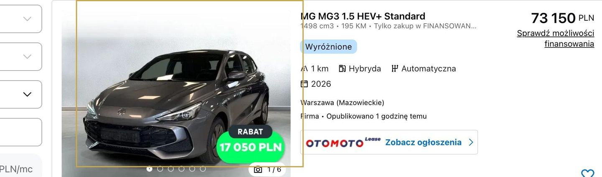
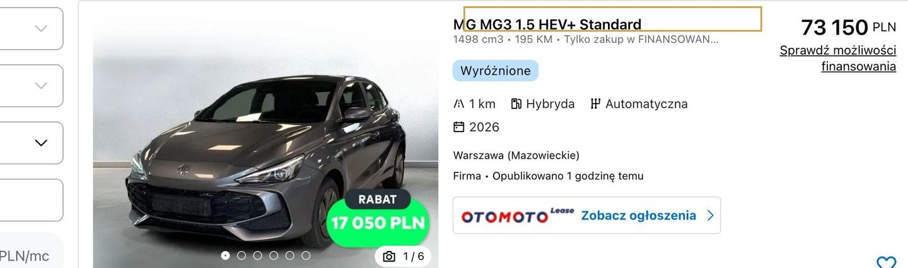
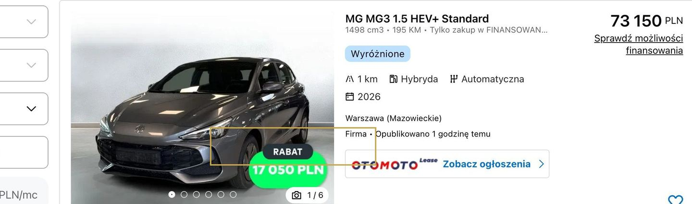
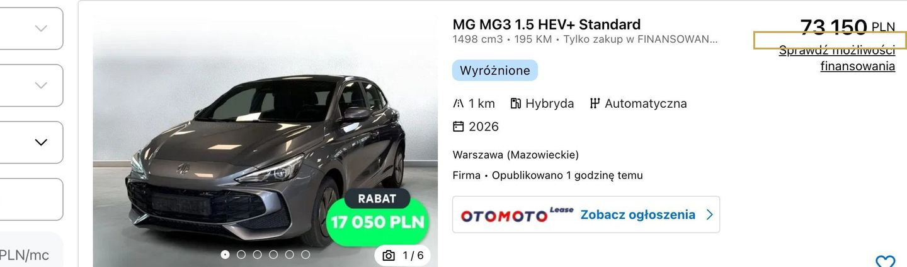
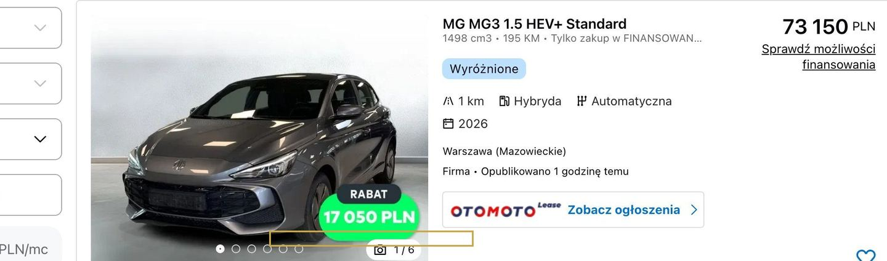
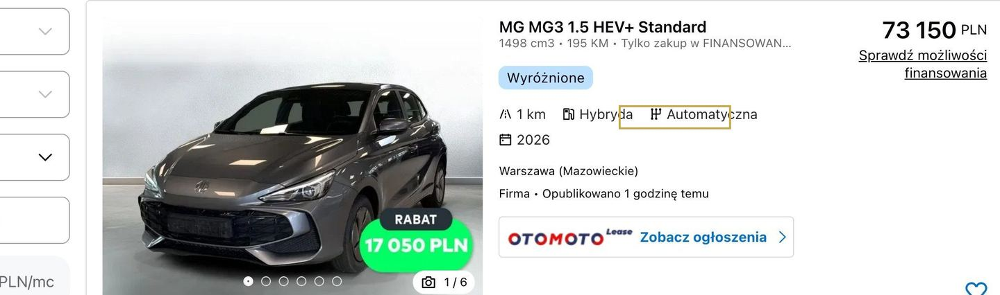
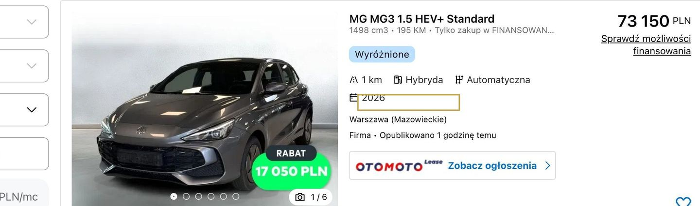
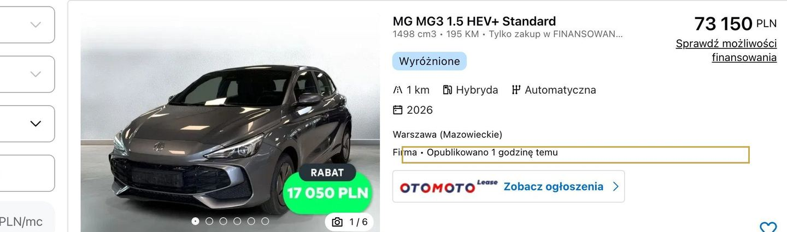
8 elementów · 8 z werdyktem
Co jest na stronie i w jakiej kolejności widzi to klient.
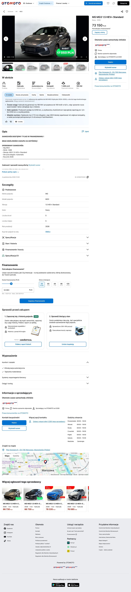
1 2 3 4 5 6 7 8| # | Etykieta (jak na stronie) | Element | Obserwacje | Etap i funkcja na ścieżce zakupowej | Od góry strony |
|---|---|---|---|---|---|
| 1 | W skrócie | w_skrócie | Blok treści (section/article), 10 dzieci | brak opisu | 152 px |
| 2 | Podsumowanie AI Zdjęcie 1 z 29 | section_152 | Blok treści (section/article), 2 dzieci | brak opisu | 152 px |
| 3 | Podsumowanie AI | section_152 | Blok treści (section/article), 1 dzieci | brak opisu | 152 px |
| 4 | O modelu Koszty utrzymania Cechy Opinie Bezpieczeństwo Ciekawostki Informacje wygenerowane przez AI | section_888 | Blok treści (section/article), 1 dzieci | brak opisu | 888 px |
| 5 | Sprawdź przed zakupem | sprawdź_przed_zakupem | Blok treści (section/article), 2 dzieci | brak opisu | 2996 px |
| 6 | Znajdź nas | znajdź_nas | Blok treści (section/article), 4 dzieci | brak opisu | 5086 px |
| 7 | Powered by OTOMOTO | section_5428 | Blok treści (section/article), 1 dzieci | brak opisu | 5428 px |
| 8 | Nasze aplikacje w twoim telefonie | section_5621 | Blok treści (section/article), 1 dzieci | brak opisu | 5621 px |
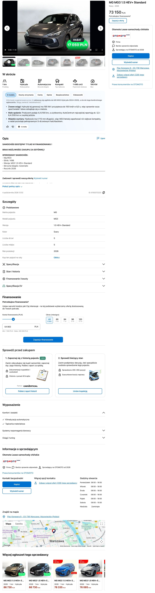
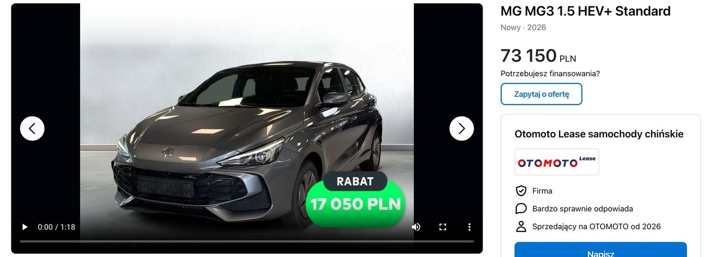
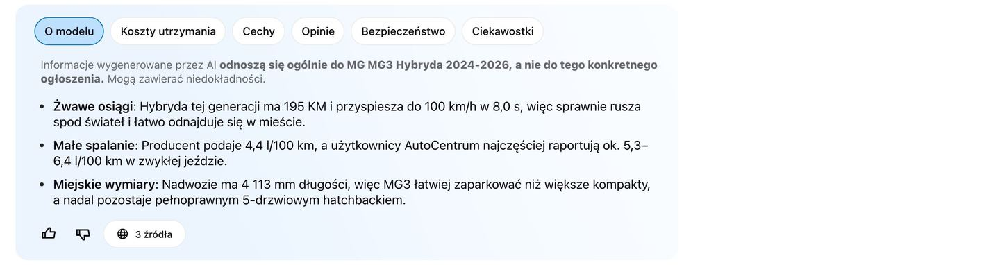
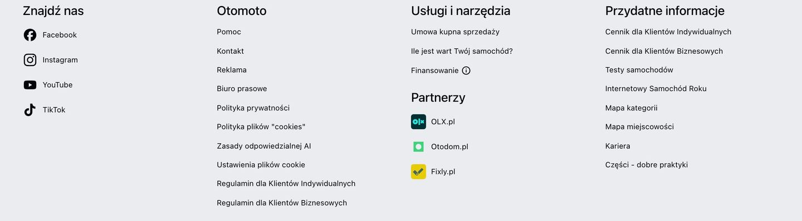